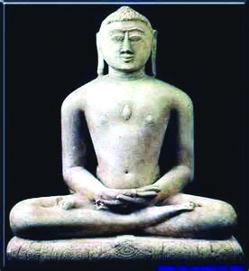
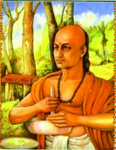
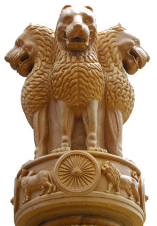
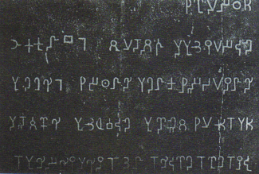
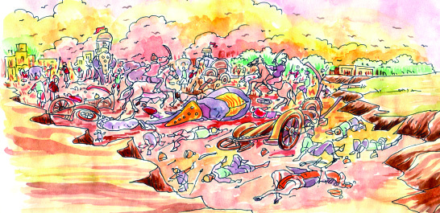
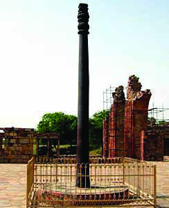
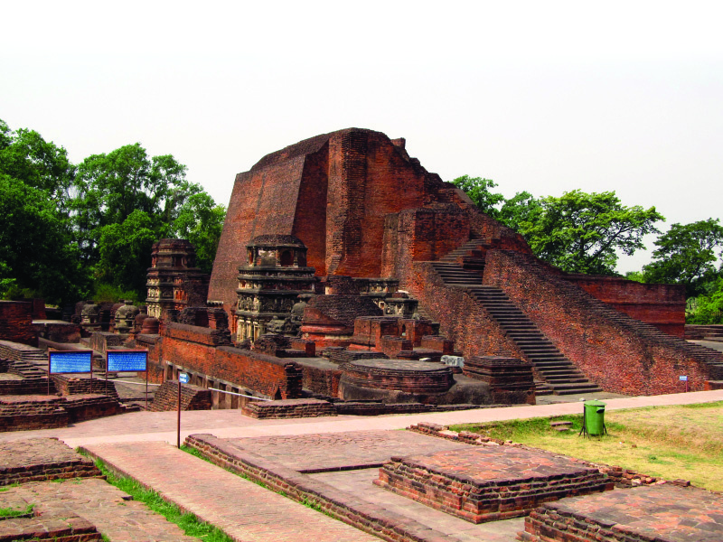
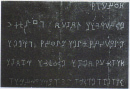
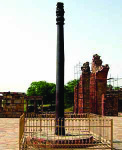
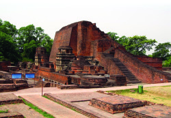

97
97
Non-Violence, Wisdom, Power
Godavari
Magadha
Magadha, Anga, Vajji, Vatsa, Malla,
Kasi, Kosala, Chedi, Panchala,
Ashmaka, Avanti, Surasena, Kuru,
Matsya, Gandhara, and Kamboja.
Mahajanapadas
Ganga
Read the given poem.
Based on this poem, find out the way in which the human life
attained progress in India. We have discussed the Aryan
invasion along the gangetic valley.
As a result of Aryan expansion to the gangetic plains by the
sixth century BC, several agricultural lands and
settlements were formed in the region. These
settlements with newly developed trading centres and
towns were known as Janapadas. Several such
Janapadas extended upto the Godavari basin. Sixteen
Janapadas gained prominence
among them and came to be
known as the 'Mahajanapadas'.
Magadha was the most powerful
among the Mahajanapadas.
Locate Magadha in the given map.
Burnt jungles down to ashes
To nurture golden grains,
Hard iron we tamed to fashion
Handy tools to serve toil,
Lit the lamps of lore to spread
The fiery zeal of life to arts,
And wings to suffering souls were lent
To ascend unscaled heights of yore.
(unpublished translation)
ImSpw ]Sepw shÆo-cm°n
I\-I-°-Xn-cn\p hf-taIn
ITn-\-an-cp-ºp-Ip-g-ºm-°n-∏e
Icp-\n-c-hm¿Øp-]-Wn-t°In
Adn-hn≥ Xncn-Iƒ sImfp-Øn-°-e-Iƒ˛
°mth-i-Øn¬ NqtSIn
amtem-Sn-gbpw a¿Øym-flm-hn\v
tatem-´p-b-cm≥ Nnd-Ip-XIn
˛ sshtem-∏n≈n
JT-509/3/ Social Sci. - 5 (E), Vol-2
Page 17

Page 18
98
98
Social Science V
"This is an order from His
Highness...
Nobody should practise
animal sacrifice as part of
yajna henceforth. Blood
shedding rituals and
offerings in the form of
flesh are not permitted.
Acquring knowledge is
life.This proclamation
stipulates that only the kind
are bestowed with kindness.
This is the order from His
Highness."
Magadha had large deposits of iron ore. The use of iron
weapons and implements were instrumental in the growth of
Magadha. Iron axe was effective in clearing the dense forests
of the gangetic plain. They were able to till hard soil using
iron ploughshare. Consequently, agricultural production
increased. This stimulated trade and the subsequent growth
of cities. Magadha attained prosperity with the progress of
agriculture and trade. This helped Magadha to organize a huge
army and conquer the nearby regions. Rulers of Magadha,
during their reigns, annexed other Janapadas to Magadha, thus
making it a larger kingdom.
What are the factors that helped Magadha to grow as a
powerful kingdom?
•
Large deposits of iron ore
•
•
•
Ahimsa
This is the proclamation of King
Bimbisara of Magadha. What
could have prompted him to
make such a proclamation?
We have discussed the role of
agricultural progress in the growth
of Magadha to a powerful
kingdom. Cattle were the
backbone of agricultural sector
in those days. They were
essential for ploughing and a
source of manure. Extensive
killing of cattle as offerings
during the yagas adversely
affected agriculture. It is in this
context that King Bimbisara
made such a royal proclamation.
Page 19



99
99
Non-Violence, Wisdom, Power
During this period, Buddhism and Jainism evolved against
the inequalities that existed in the society. Jainism propagated
by Vardhamana Mahavira and Buddhism by Gautama Buddha
gave emphasis to Ahimsa. It was widespread animal sacrifice
that prompted Buddha and Mahavira to spread the doctrine
of Ahimsa.
They preached their ideology in the language of the common
man. Prakrit was the language that Mahavira used, while
Buddha used Pali language. Mahavira and Buddha were
brought up in royal families in the lap of every luxury. Still
they were unhappy and worried about the sufferings of the
common man and thought of the ways to relieve them of their
sufferings.
•
Right knowledge
•
Right faith
•
Right conduct
Jain Principles
Buddhist Principles
• The worldly life is full of sufferings
• Desire is the sole reason for
unhappiness
• One can ward off sufferings, if one
frees oneself from desires
• Adopting the eight-fold path frees one
from desires and sufferings
Why did Buddhism and Jainism give much importance
to the idea of Ahimsa?
Statue of Mahavira
Statue of Buddha
Page 20



100
100
Social Science V
Arthasasthra
Chanakya, also known as Kautilya, was the chief
advisor to Chandragupta Maurya, the founder of
the Mauryan empire. Arthasasthra is the greatest
work of Chanakya. It discusses how a powerful and
effective administration should be organised.
Chanakya
National emblem
Duty of a king
There will be peace in the kingdom only if different sections
of people co-exist harmoniously. To ensure this in his empire,
Ashoka adopted the policy of Dhamma (Dharma). Dhamma
aimed at maintaining peace in the nation by promoting unity
and tolerance among the people. Some of the ideals of it are
given below.
Obey parents
Respect gurus (teachers)
Denounce animal sacrifice
Express tolerance towards every religion
Show kindness towards fellow creatures
Discuss the contemporary relevance of Asoka's policy of
Dhamma.
Expansion of power
Isn't this picture familiar to you? Where have
you seen it? It is our national emblem. It is taken
from the pillar erected by Emperor Ashoka at
Saranath. The Dharma Chakra of Ashoka,
depicted in the emblem, can be seen at the centre
of our national flag.
Ashoka was the most important among the kings of the Maurya
dynasty with Magadha as the capital. It was Chandragupta
Maurya who established the Maurya dynasty.
Page 21



101
101
Non-Violence, Wisdom, Power
Ashoka, conveyed his directions,
decisions, and dhamma to his
subjects through stone edicts. These
edicts were placed along the sides
of the main roads and in the city
centres.
Buddhism inspired Ashoka to
propagate Dhamma. Ashoka had
waged many wars to expand his kingdom. The war with the
kingdom of Kalinga was the most important among them. In
this war, Kalinga was defeated. It was after the Kalinga war
which caused the death and devastation of many people that
Ashoka adopted Buddhism. He played a significant role in
propagating Buddhism in different parts of the world.
Ashoka's stone edict
No More War
When Ashoka ascended
the throne, he waged
many wars to expand
his empire. He sent a
message to the king of
Kalinga demanding his
surrender. But the king
of Kalinga refused the
demand. In 261 BC
Ashoka led a huge army against Kalinga. The freedom - loving
people of Kalinga put up a stiff resistance against the attack of
Ashoka. Contrary to Ashoka's expectation Kalinga came close to
victory on a number of occasions. But ultimately the victory was
Ashoka's.
The battlefield was filled with corpses of soldiers of both sides.
Vultures hovered over the heap of dead bodies... the sufferings of
those who had lost their limbs... lamenting of the orphaned
children... despaire of widows...
These sights overwhelmed Ashoka. He realized that such a victory
was meaningless. Soon Ashoka became an ardent follower of
Buddhism and continued his reign based on Buddhist principles.
Kalinga War - An illustration
Present the scene of the war of Kalinga that influenced Ashoka
as a skit in the classroom.
Page 22
102
102
Social Science V
Society, economy, art
Let us examine the socio-economic life during the Maurya
period.
Social stratification based on Chaturvarnya doctrine
prevailed.
Sudras were confined to agricultural work.
Buddhism and Jainism became more popular.
Agriculture and trade flourished.
The rulers provided better irrigation facilities for the
progress of agriculture.
Handicrafts like sewing and weaving existed.
Coins were in use for transactions.
Several roads were constructed for the progress of trade.
The given picture is of the
stupa built by Emperor
Ashoka at Sanchi. Several
such stupas were built during
the reign of the Mauryas.
Besides these, the Maurya
kings built many palaces
and several pillars like the
one at Saranath. All these
monuments point to the progress in the fields of architecture
and sculpture during that period.
Compare and contrast the social life of the Marurya
period with that of the Later Vedic Period.
The stupa of Sanchi
Transition of ages
After the decline of the Mauryan Empire, the fourth century
AD marked the growth of a new dynasty in the gangetic plain
- the Guptas. Chandragupta I, Samudragupta and
Chandragupta II were the important rulers of the Gupta
Page 23


103
103
Non-Violence, Wisdom, Power
The blooming of wisdom
Many works were written in Sanskrit during the Gupta period.
Kalidasa was the important literary figure of the period.
Abhijnanashakuntalam, Meghasandesam, and Kumarasambhavam
are his great works.
Iron pillar at Mehrauli
Navaratna
A group of nine scholars who lived in the court of Chandragupta
II is known as the Navaratna. They were Kalidasa, Ghatakarpara,
Kshapanaka, Vararuchi, Varahamihira, Vetalbhata, Dhanvantari,
Amarasimha, and Sanku.
dynasty. By the end of the Gupta period there was a remarkable
decline in trade with distant lands. More people engaged in
agriculture. The kings used to offer large shares of land as gift
to priests and places of worship. The farmers were made to
engage in agriculture in these lands by the priests. There was
an increase in social inequality during this period. The
popularity of Buddhism and Jainism weakened.
Compare the socio-economic life of the Maurya and
the Gupta periods.
Have you noticed the iron pillar
in the picture? This pillar,
constructed during the period of
Chandragupta II, is presently
situated at Mehrauli in Delhi.
Aren't you amazed at the survival
of this iron pillar still remaining
rust - resistant even after centuries
of snow, rain and sun? This iron
pillar is the epitome of the
smelting process of iron in the
Gupta period.
Varahamihira, Brahmagupta,
Bhaskaracharya, and Aryabhatta
gave valuable contributions to the field of science in the Gupta
period. Varahamihira and Brahmagupta made remarkable
contributions to astronomy, Bhaskaracharya to mathematics,
and Aryabhatta to both astronomy and mathematics.
Page 24

104
104
Social Science V
The remnants of the Nalanda University
The names of famous scholars of the Gupta period are given
in the table. Write down the field in which they were famous.
The picture given below shows the remnants of the Nalanda
University, a famous educational centre in ancient India. It
was established during the Gupta period. Students from
different parts of Asia came here in pursuit of knowledge.
Thousands of students and hundreds of teachers were engaged
in educational activities in the University.
The pictures of some monuments that we have discussed in
this chapter are given below. Each of them signifies the progress
in a particular field. Identify the fields.
Scholars
Fields
Aryabhatta
Kalidasa
Varahamihira
Bhaskaracharya
Brahmagupta
Page 25





105
105
Non-Violence, Wisdom, Power
Monument
Fields
'The Gupta period was marked by excellence in the
fields of science, art, literature, and education'.
Substantiate.
We have discussed the changes that took place in the society
right from the beginning of the Magadha period till the end of
the Gupta period.
Let us find out the important ones among them.
Extensive farming led to increased agricultural production.
Agriculture and related occupations created new
knowledge.
The ideologies that came up against social inequalities,
influenced the society and the rulers.
The rulers promoted the changes in the fields of science,
art, and literature.
JT-509/4/ Social Sci. - 5 (E), Vol-2
Page 26

106
106
Social Science V
Summary
•
Settled life and spread of agriculture led to the emergence
of Mahajanapadas.
•
Jainism and Buddhism originated in the sixth century BC.
•
Magadha emerged the most powerful among the sixteen
Mahajanapadas that became the centre of the Mauryan
Empire.
•
The Gupta period was marked by excellence in the fields
of science, art, literature, and education.
•
The Nalanda University was one of the important
educational centres in ancient India.
Significant learning outcomes
The learner can:
•
describe the Mahajanapadas that existed in ancient India
•
identify the factors that helped in the growth of Magadha
•
evaluate the social background that led to the emergence
of Buddhism and Jainism
•
evaluate the features of the Mauryan period
•
evaluate the progress achieved in the fields of art,
literature, and science during the Gupta period
•
compare the socio-economic life of the Gupta period with
that of the Maurya period.
Let us assess
•
Was the emergence of Buddhism and Jainism the need of
the period? Substantiate your opinion.
•
Elucidate the factors that favoured the growth of Magadha.
Page 27

107
107
Non-Violence, Wisdom, Power
•
What role did the agricultural sector play in the formation
of the Janapadas?
•
Explain the Dhamma of Ashoka.
•
Elucidate the progress achieved in the fields of art,
literature and science during the Gupta period.
Extended activities
•
List out the objects on which the national emblem is
imprinted.
•
List out the ancient Indian writers and their works.
•
Collect and read the Jataka Stories, Panchatantra Stories
and Vikramaditya Stories.